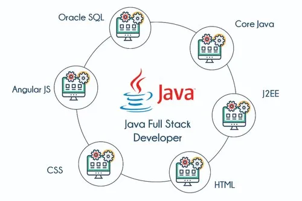

Java Full Stack Development refers to the development of both front-end (client-side) and
back-end (server-side) parts of a web application. This involves using Java programming
language for server-side development, along with front-end technologies like HTML, CSS,
JavaScript, and frameworks like Angular.
